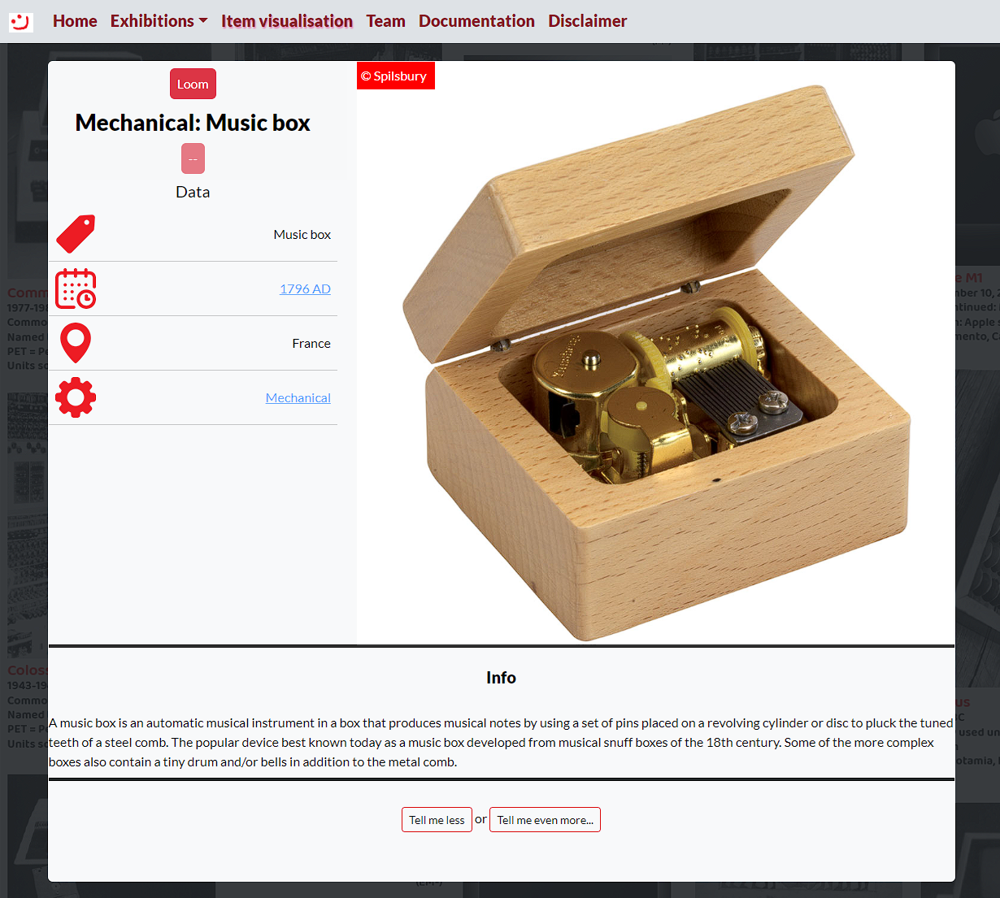
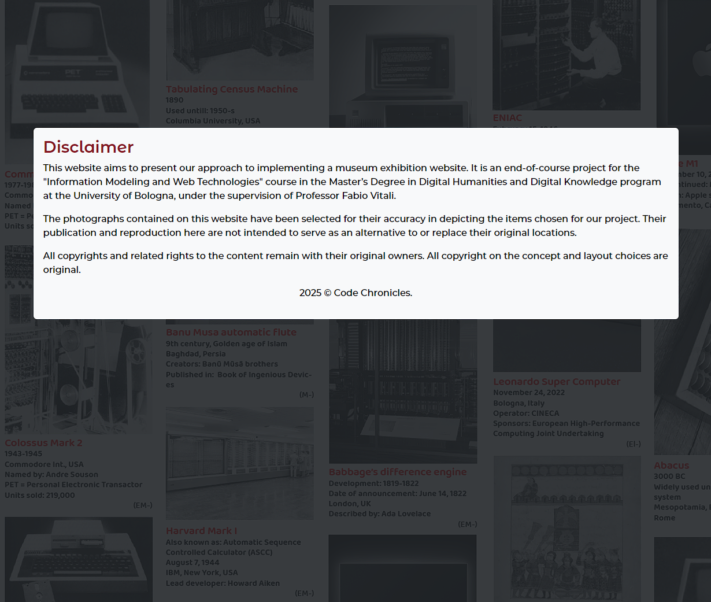

1 - Project description
1.1 - Idea
We were presented with a task to create a virtual representation of a museum tour in form of a web page. We thus decided to create our tour on the basis of programmable machines.
While in the modern age the natural thought would be to think, that this would mean a collection of electronic general purpose computers, in fact, the collection would go back to programmable automatons of the Medieval era.
One of the main points of the projects are the narratives, structuring a hypothetical virtual tour.
1.2 - Responsibilities
Alisa Antonova -
Elena Binotti -
Hubert Krzywonos - Design and implementation of the item visualisation page
1.3 - Narratives
The implemented narratives are:
- Temporal - A big-tent of a narrative that includes all items ordered by the date of construction, to simulate a thorough museum visit.
- Power type - Mechanical, Electromechanical, Electronic
2 - Design specification
2.1 - Colour scheme
The palette of our website can be categorised into three different groups:
- Whites and light-grays - #ffffff, #f8f9fa, #eeeeee, #dee2e6
- Blacks and dark-grays - #333333, #222528, #000000
- Reds and pinks - #842029, #ff0000, #e685b5
2.2 - Colour usage
For the navbar and the background of the main content, colours from the whites/light-grays category have been chosen. Some of the reasons for this selection include: providing contrast for the main content part of the website in relation to the dark background; providing contrast to the black text (in case of the main part of the webpage), or dark red text (in case of the navbar) for readability reasons.
For the main blocks of text, black has been used, to provide the maximal contrast possible to the background.
The general background of the page utilises a colour from the Bootstrap dark palette. It is not a neutral gray, as it is slightly tinted with teal (#222528).
For the borders/visual breakers inside of the content, we utilised #333333 to provide a slightly different, and neutral tone of gray.
Use of reds as tertiary colours used to provide additional differentiation for navbar text and buttons stems directly from the aforementioned dark Bootstrap theme background colour. While the maximum contrast for that colour would necessitate usage of oranges, we preferred to utilise red, as it is a primary colour, at least partially to follow the modern design trends.
2.3 - Typography
Two fonts used for the projects are part of the same font family, Lato.
For regular text, the font used is Lato Regular. Using a sans-serif font was warranted by ease of reading.
For emphasized text (headings and navbar), we used Lato Black. Being generally thicker, this choice leads to a visual distinction of the elements we want to emphasize.
2.4 - Layout principles
We managed to maintain general consistency in style, with the notable exception for team and disclaimer pages, where the main container is positioned more to the bottom of the page than on the rest of sites. This stylistic consistency is a manner of maintaining a visual cohesion of the entire website, allows for more efficient development through reusing of elements, and leads to a streamlines user experience.
The main content of each page is contained within a Bootstrap card. The reason is the visual separation and thus, emphatisation of the page content. Additionally, this also allowed us to use a separate page background, which also has a detailing role, providing depth to an otherwise flat style.
Finally, our layout mainly consists of using a navbar for the entire page, with a card/container being the holder of the content. In case of item visualisation (which can be considered the central point of the project), this card is then split into columns using Bootstrap's grid system, to ensure a design that is adaptable for different screen sizes.
2.5 - Technical choices
The technical backbone, as for all websites, is the trio of HTML/CSS/JavaScript.
We've heavily utilised Bootstrap to provide reusable styling options, as well as give the website a modern feel.
For data, we've utilised JSON. The reasons for this include, but are not limited to: being an open standard file format, being lightweight, and JavaScript having native functions to parse JSON data into objects.
3 - Page layouts
3.1 - Home page
blablabla
blablablablablablablablabla
bla
blablablabla
3.2 - Exhibition page
blablabla
blablablablablablablablabla
bla
blablablabla
3.3 - Item visualisation
Navbar - Same as on other pages, it is kept visually moderate to avoid drawing attention away from the content of the page. Dark red text is also visually distinct from the regular, black text used for content text.
Body - Same as on other pages, the body itself is used to provide a background, used to differentiate the navbar and the card with the main content, as well as provide a bit of depth by use of visual details.
Card - could be described as divided into three visually separate parts:
- Top left - holds the narrative navigation buttons, as well as the label displaying the name of the item currently displayed and the currently selected narrative. On larger screens, this is a single row with columns of proportions 1:2:1, on smaller screens, it is three rows instead. This part also holds the table containing information about the museal objects, such as provenance, date of creation and type of device.
- Top right - holds the image of the museal object currently displayed by the item visualisation page.
- Bottom - can be described as divided into three different parts. The first two have visual breakers in form of a line, and contain textual information about the object, and buttons to display shorter/longer information about it, respectively. The fourth part is by default not displayed, and contains a separate HTML file, representing the exhaustive version of textual information about the object.
3.4 - Team page
Navbar - Same as on other pages, it is kept visually moderate to avoid drawing attention away from the content of the page. Dark red text is also visually distinct from the regular, black text used for content text.
Body - Same as on other pages, the body itself is used to provide a background, used to differentiate the navbar and the card with the main content, as well as provide a bit of depth by use of visual details.
Card - Almost identical to the disclaimer page, it is divided into three columns to hold images representing the three team members working on the project. The card on this page has additional margin added up top for centering on smaller screen sizes, as well as shortening the visual emptiness towards the bottom of the page.
3.5 - Disclaimer page
Navbar - Same as on other pages, it is kept visually moderate to avoid drawing attention away from the content of the page. Dark red text is also visually distinct from the regular, black text used for content text.
Body - Same as on other pages, the body itself is used to provide a background, used to differentiate the navbar and the card with the main content, as well as provide a bit of depth by use of visual details.
Card - Almost identical to the team page, it holds the basic information regarding the project. The card on this page has additional margin added up top for centering on smaller screen sizes, as well as shortening the visual emptiness towards the bottom of the page.